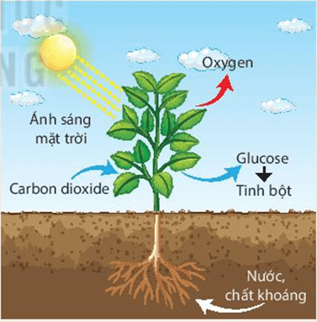
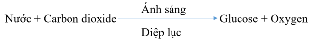
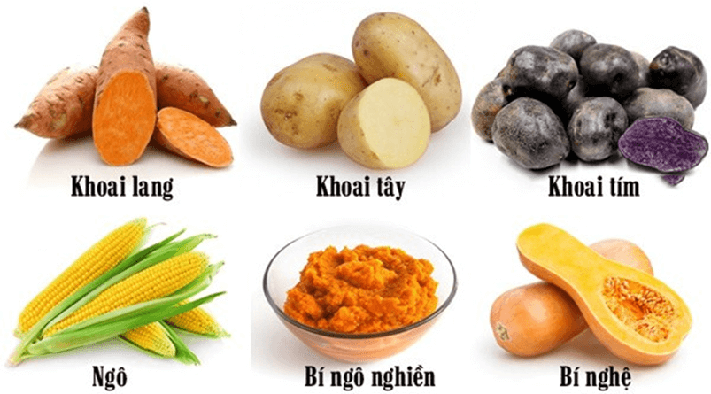
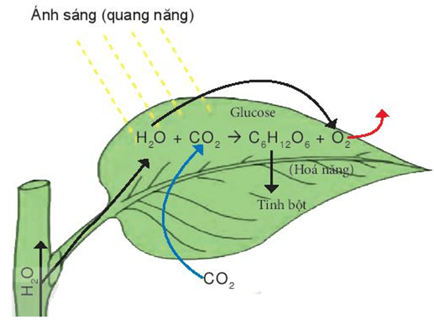
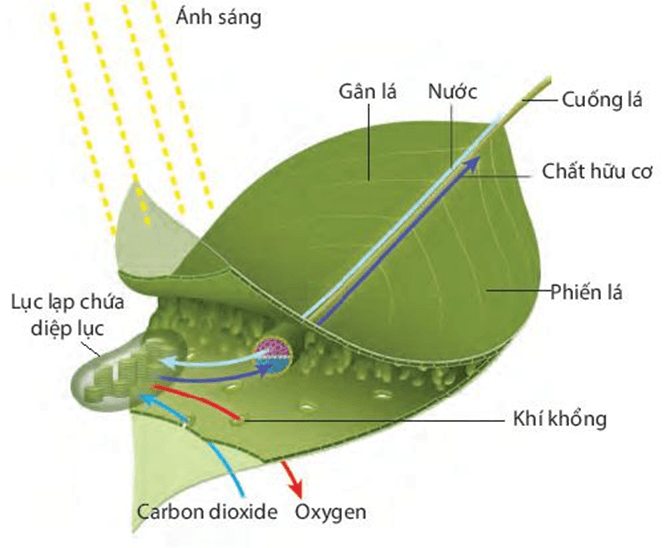

I. Khái quát về quang hợp
Quang hợp là một trong những quá trình trao đổi chất và chuyển hóa năng lượng quan trọng ở thực vật.
1. Khái niệm quang hợp
Quang hợp là quá trình lá cây sử dụng nước và khí carbon dioxide nhờ năng lượng ánh sáng được diệp lục hấp thụ để tạo ra chất hữu cơ và giải phóng khí oxygen.

2. Phương trình tổng quát
Phương trình tổng quát của quá trình quang hợp:

(Điều kiện: Có ánh sáng và chất diệp lục)
Glucose được tạo thành sẽ liên kết với nhau tạo thành tinh bột - chất dự trữ đặc trưng của thực vật.

3. Mối quan hệ giữa trao đổi chất và chuyển hóa năng lượng
Trong quá trình quang hợp, trao đổi chất và chuyển hóa năng lượng luôn diễn ra đồng thời.
- Cây lấy nước và khí carbon dioxide từ môi trường.
- Tổng hợp chất hữu cơ và giải phóng khí oxygen.
- Chuyển năng lượng ánh sáng thành hóa năng tích lũy trong chất hữu cơ.

II. Vai trò của lá cây với chức năng quang hợp
Quang hợp diễn ra chủ yếu ở lá cây, trong bào quan gọi là lục lạp.
Các đặc điểm của lá phù hợp với chức năng quang hợp
- Phiến lá rộng giúp nhận được nhiều ánh sáng.
- Lá thường mỏng để ánh sáng dễ xuyên qua.
- Tế bào lá chứa nhiều lục lạp có chất diệp lục.
- Khí khổng giúp trao đổi khí CO₂ và O₂.
- Hệ gân lá vận chuyển nước và các chất dinh dưỡng.

Ghi nhớ
- Quang hợp là quá trình tạo chất hữu cơ và giải phóng oxygen.
- Quá trình quang hợp cần nước, khí carbon dioxide, ánh sáng và diệp lục.
- Quang năng được chuyển hóa thành hóa năng tích lũy trong chất hữu cơ.
- Lá cây có cấu tạo rất phù hợp với chức năng quang hợp.